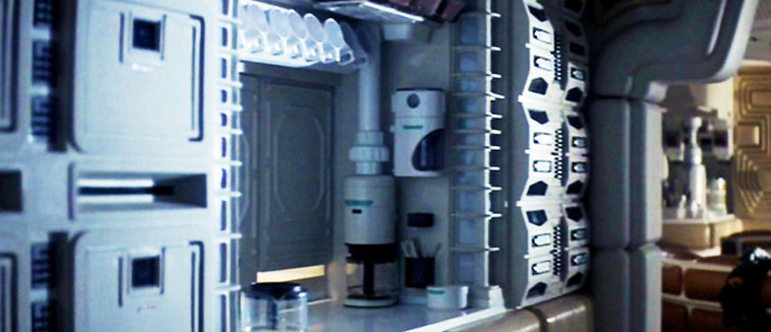
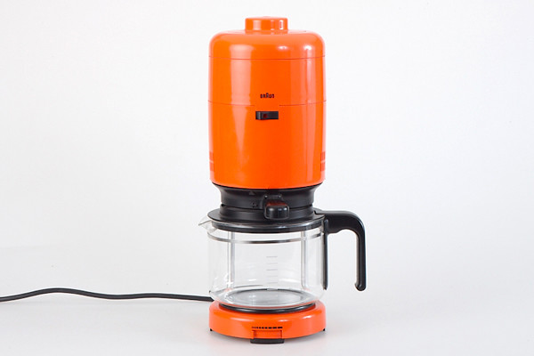
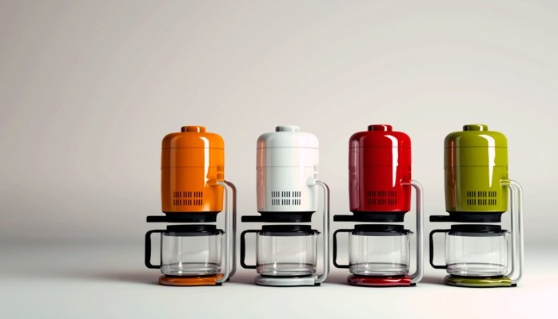

The establishing shots of Ridley Scott's 1979 film, Alien feature a number of views of a futuristic space refinery. Both the inside and the outside of the ship are incredibly detailed, and well thought out. One of the shots is of a pantry area, which features 2 objects that don't look out of place in the futuristic setting, but weren't new, even for the late 70's : The Braun KF-20 Coffee Maker, and the Krups 223A Coffee grinder.

We don't know if the space explorers of the future will even drink coffee, or if they'll prefer pumpkin spice lattes or flat whites, but rest assured, the Braun coffee maker wouldn't look dated in comparison to its futuristic environs.
Today, the form-factor of the drip coffee maker is so common, that it impossible to imagine how revolutionary the Braun was in 1972. The designer, Florian Seiffert, managed to combine all the technical processes required for making coffee into a sleek, cylindrical body. The wires connecting and powering the heating elements at the top and bottom, were hidden away in a pair of metallic tubes.

Not one to rest on their laurels, Braun released a slight redesign in the same year. Hartwig Kahlcke redesigned the pot, to ensure that it was almost impossible to brush your hand up against the hot glass, while picking up the pot.
One of the hallmarks of a great design, is how well it ages, and dates over time. Countless products of the last few years already look dated, as manufacturers change their design language faster than consumers can comprehend.
Dieter Rams maintained a strong design language, across the entire Braun product range, which was both innovative and timeless. Many have drawn comparisons between the KF-20, and Apple's current Mac Pro line, perhaps an homage to the clean, minimalist designs and philosophy of Rams. And perhaps the greatest reminder of the timelessness of Rams' design language, is the fact that any of his products wouldn't look out of place on a space-ship, decades from now.
